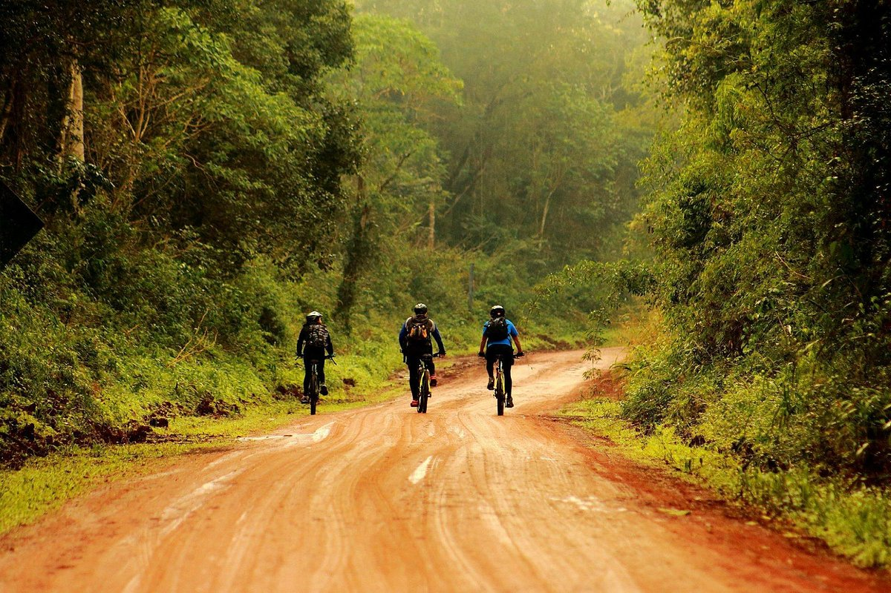
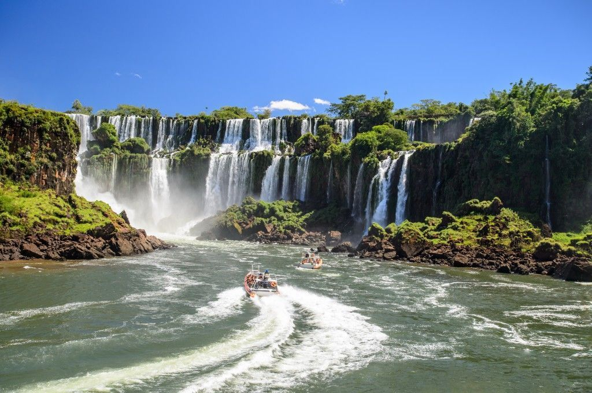

Somos Pedaleando por Misiones

¡Bienvenidos a Pedaleando por Misiones!
Somos un grupo de ciclistas y amantes de la naturaleza que exploramos la maravillosa provincia de Misiones
¿Nuestra misión?
Descubrir cada rincón de nuestra tierra colorada rica en biodiversidad y cultura, recorriendo en bicicleta senderos sostenibles. Desde selvas hasta cataratas, pasando por pueblos y comunidades, nuestra pasión ciclista se fusiona con el deseo de experimentar la esencia de Misiones.

¡Te invitamos a unirte a nuestra comunidad y explorar esta tierra llena de tradiciones ancestrales sobre dos ruedas!"